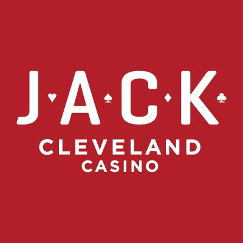
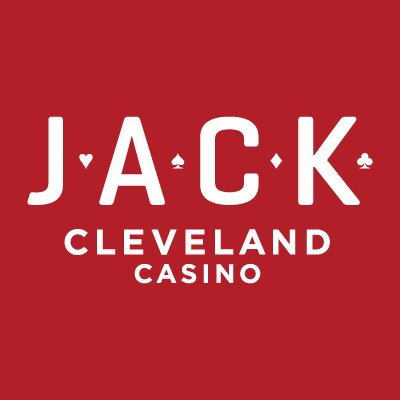

Tyler Kadow
ABOUT TYLER
Technical Skills

Excel (6 years)
- Pivot tables
- Vlookups
- Excel VBA
- Macros
- Forecasting
Accounting/Finance Software (6 years)
- Blackline
- Quickbooks
- Dynamics AX
- Tableau
Full Stack Web Development (3 years)
- HTML & CSS
- JavaScript & jQuery
- PHP
- MySQL
- GitHub
Micorosft Office Suite (6 years)
- Word
- Excel
- Outlook
- PowerPoint
Professional History
 

Tyler Kadow developed a healthy work ethic at a young age. In middle school, he was responsible for a paper route spanning four streets in Lakewood, Ohio. In the summer months when Tyler was in high school, he worked for the city's recreation department, preparing nearly a dozen baseball fields for play.
While attending college in 2013, Tyler earned a position as a sales rep for Vector Marketing, the sales arm for Cutco Corporation. There, he earned a sales award for selling over $750 of cutlery in his first week.
Tyler accepted a full-time cashier position at Cleveland's own Horseshoe Casino (now JACK Casino) while finishing his last semester at Cleveland State University, which was also full-time. After graduating with a Bachelor of Arts in Economics, he was promoted to Staff Accountant in February 2014.
Tyler's work ethic and positive attitude earned him recognition from Horseshoe. He was awarded the Rock Star Award for Caring Culture in January 2015, and was promoted to Seinor Accountant in January 2017. In this new role, Tyler was no longer just required to do. He was required to achieve. And boy, did he achieve!
Multiple audits were made more efficient without any sacrifices to accuracy. One such audit was the non-gaming audit. Each day, the accounting team would record the cash flows from the casino's cashiers in the bars, restaurants, and the gift shop and compare that to the cashiers' recorded sales for any variances. This audit used to be very manual and tediuos, usually taking up to two hours. With assistance from another accountant, including time spent outside work learning more about Excel, the audit now takes only a couple minutes.
The COVID-19 pandemic hit the gaming industry hard and JACK Cleveland Casino was forced to shut down by the state government. Unfortunately, after six great years in the gaming industry, Tyler was laid off due to the shut down.
Tyler is currently looking for employment in the coding or accounting/finance fields. He is also taking this time to improve on his skills. He is using Udemy, an American online learning platform aimed at professional adults and students, to learn more about forecasting with Excel. Tyler has also been training himself how to use Tableau, a popular software used to perform data analysis and visualize those results for presentations.
Personal Life
Tyler Kadow was born and raised in Lakewood, Ohio. He graduated from Cleveland State University cum laude with a Bachelor of Arts in Economics in 2013. Included in the portfolio section is his honors paper, which was about cryptocurrency and its viability as money. Tyler attended a coding bootcamp in late 2017 at Case Western Reserve University. He used those skills to code the items available on the profile page as well as this website.
Tyler has always had a passion for sculpting and has begun posting his creations online, and you can see some of his creations below. For those who have an interest in his work, contact him and Tyler can create something unique just for you! You can also donate through PayPal or using cryptocurrency.
Tyler is currently married to his lovely wife, Angela. He is also a huge Cleveland sports fan! His favorite teams are the Indians, Browns, Cavs, Buckeyes, and especially the Monsters.
Tyler's Sculpey Creations